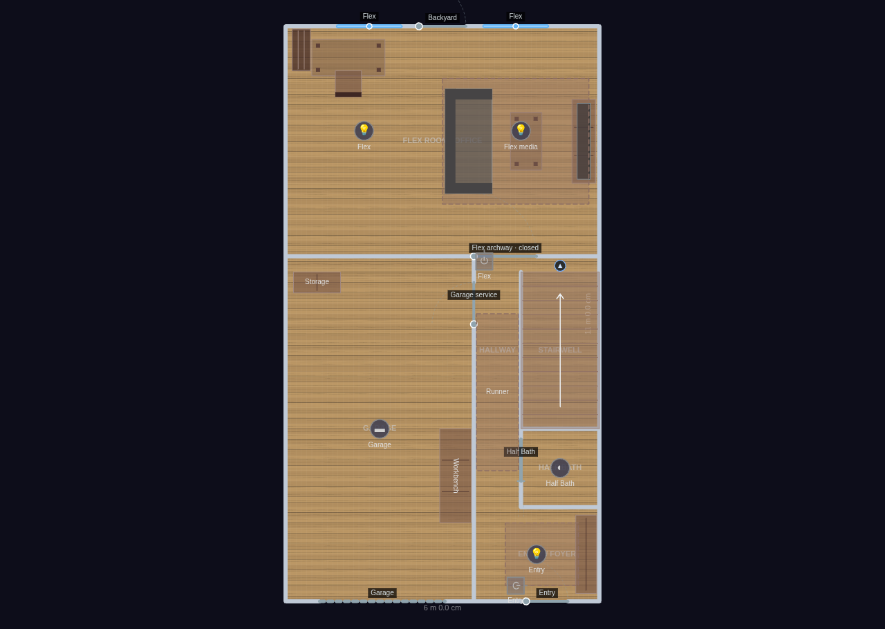
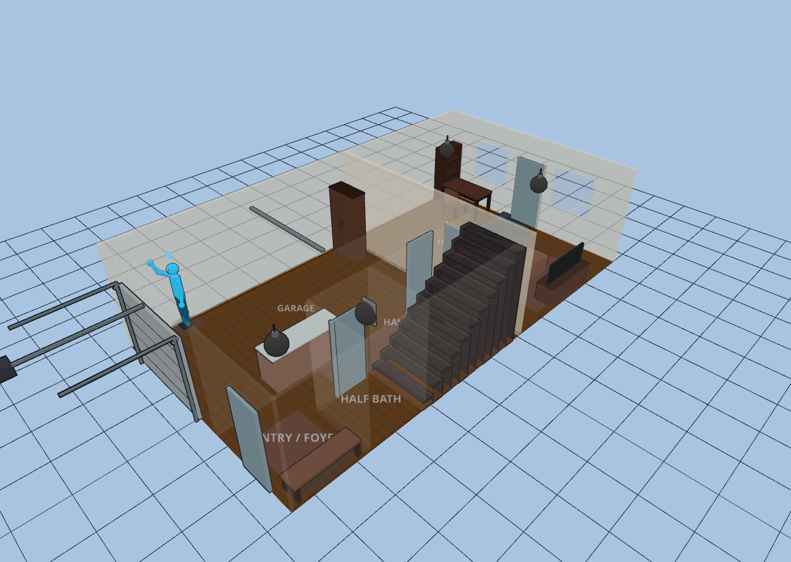
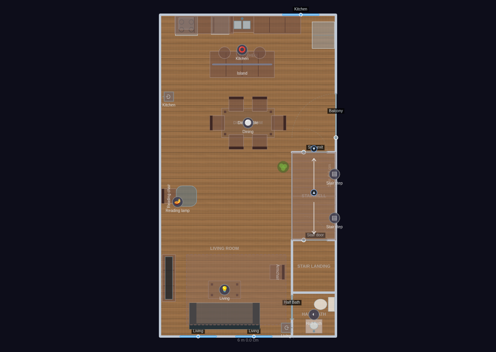
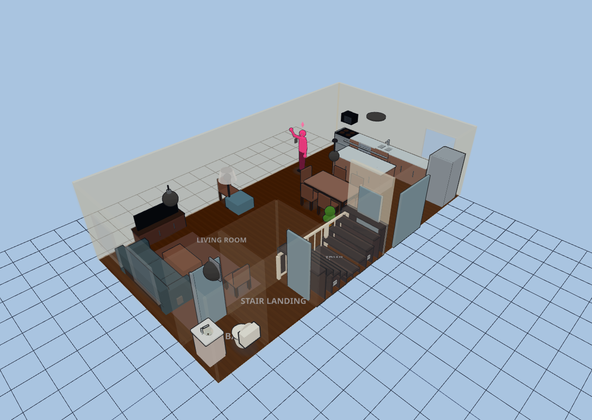
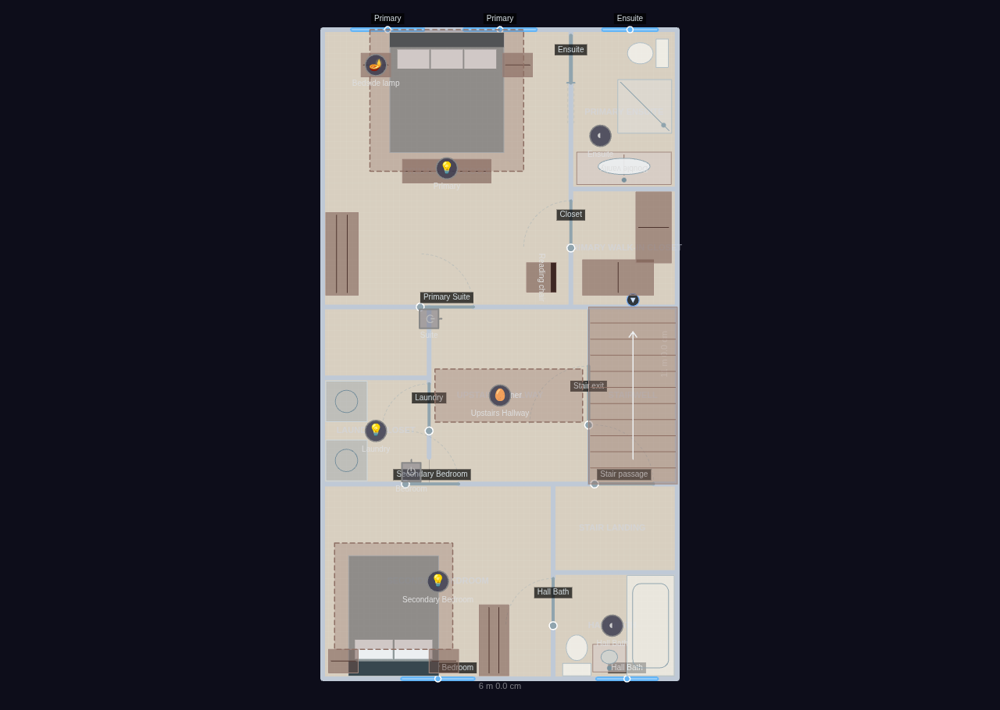
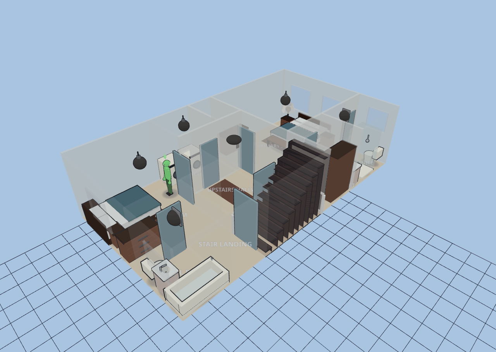
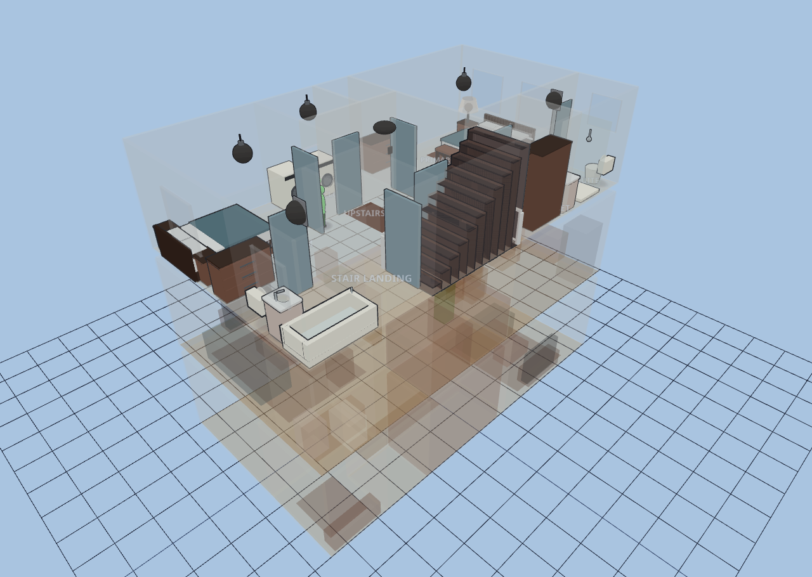

Townhouse — 3 Level
Explore it live above, or import the JSON in Diorama under Settings ▸ Data ▸ Configurations ▸ Import.
~1,875 sq ft (174 m²) heated + 256 sq ft garage · 3 floors · 21 rooms
A narrow urban infill rowhouse on an identical 6000 × 11000 mm footprint stacked
three storeys around a single switchback stair core against the right party wall.
The two long walls are windowless party walls shared with the neighbors; all light
and both exterior doors live on the front (street) and rear (yard) facades. Ground
is utilitarian (garage + flex office), the Middle is the public level (open
kitchen/dining/living + balcony), and the Top is private (bedrooms/baths/laundry).
Wood-look floors on the living levels, tile in the wet rooms, sealed concrete tone
in the garage; walls warm-neutral below, cooler upstairs. Stairs are linked across
floors so avatars transit between levels; the Middle floor’s switchback carries
both a down-flight and an up-flight.
GROUND — Garage: workbench + storage cabinet (no car modeled). Entry / Foyer: shoe
bench + rug by the front door. Half Bath: powder room off the hall. Hallway:
runner connecting entry → stair → flex. Stairwell: bottom flight up to Middle.
Flex Room / Office: desk + chair under the rear window, bookshelf, plus a casual
media zone (sofa, TV on a stand, coffee table, rug).
MIDDLE — Living Room: sofa + coffee table facing a wall TV on a stand, armchair,
rug, and a rear reading nook (chair + ottoman + plant). Half Bath off the stair
landing. Stairwell: switchback down-/up-flights. Dining Room: six-seat table.
Kitchen: rear-wall run (stove, over-range microwave, dishwasher, sink, two counter
runs, corner fridge) + a freestanding island with three stools; door to the
cantilevered balcony.
TOP — Secondary Bedroom: queen bed, two nightstands, dresser, rug. Hall Bath:
vanity sink, toilet, tub. Laundry Closet: stacked washer + dryer. Upstairs
Hallway: runner. Stairwell: top landing / guarded overlook. Primary Bedroom:
king bed under the rear windows, two nightstands, dresser, foot-of-bed bench,
reading chair, rug. Primary Walk-in Closet: two wardrobe runs. Primary Ensuite:
double vanity, toilet, and a walk-in shower.
Space-saving detail: pocket doors on both half baths and the primary ensuite (a
6 m-wide house cannot spare a swing arc), stair-shaft step lights on the party
wall, an oval flush mount over the upstairs hallway, and a switchback pair of
half-flights in the stair core.
Ground
6 rooms · 66 m² footprint


Middle
6 rooms · 66 m² footprint


Top
9 rooms · 66 m² footprint


Glass-house overview
